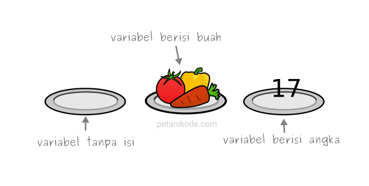
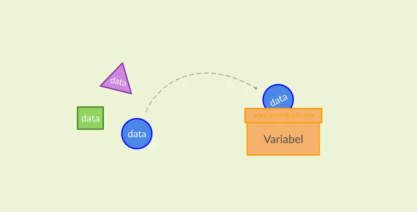
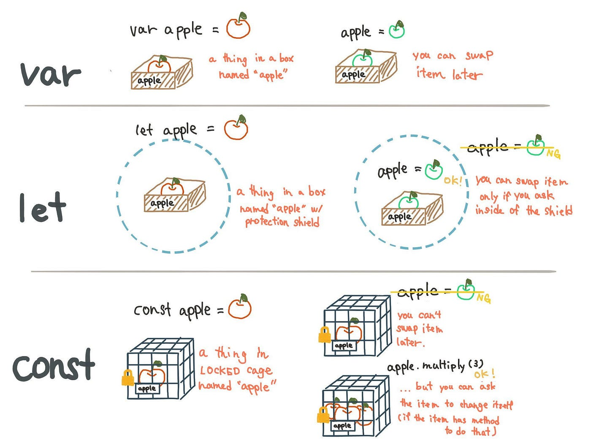

Membuat Variabel

Variabel umumnya merupakan tempat untuk menyimpan informasi, data atau nilai yang akan dikelola dalam sebuah program

Berdasarkan ilustrasi di atas, dapat disimpulkan bahwa kardus tersebut merupakah sebuah variabel, sedangkan isi yang ada di dalamnya merupakan sebuah data atau nilai.
Pada JavaScript setidaknya ada tiga cara untuk mendeklarasikan sebuah variabel, yaitu menggunakan keyword var, let, dan const. Pada versi ECMAScript 2015 (ES6) dikenalkan deklarasi variabel dengan let dan const untuk menggantikan var yang dinilai kontroversial dan rawan menimbulkan bug.
Ketentuan dalam Variabel
Berikut beberapa aturan dalam penamaan variabel yang teman-teman perlu ketahui :
Contoh firstName, lastName, catName, dll.
Var, Let dan Const
Adapun perbedaan Var, Let dan Const dapat dilihat di bawah ini

Analogi perbedaan antara Let dan Const bisa dilihat pada gambar di bawah ini
Tabel Perbedaan Var, Let dan Const
| Var | let | Const | |
|---|---|---|---|
| Penugasan | Bisa diubah | Bisa diubah | Tidak bisa diubah |
| Scope | function-scoped | block-scoped | block-scoped |
Scope
Scope adalah konteks atau ruang lingkup di mana variabel, fungsi, dan objek tersedia dalam kode anda. Scope membatasi akses ke variabel dan membantu menghindari pertentangan nama variabel dalam sebuah kode. Ada tiga jenis scope dalam Javascript :
var variableGlobal = "Ini adalah variabel global";
function contohFungsi() {
console.log(variableGlobal); // "Ini adalah variabel global"
}
Variabel yang dibuat dalam sebuah fungsi memiliki scope lokal atau function scope. Mereka hanya bisa diakses dari dalam fungsi itu sendiri.
function contohLokal() {
var variableLokal = "Nilai ini lokal lho";
console.log(variableLokal);//"Nilai ini lokal lho"
}
console.log(variableLokal); // undefined
Jika kamu mencoba mengakses variableLokal di luar contohLokal(), Javascript tidak akan mengetahuinya
dan mengembalikan nilai undefined.
Berbeda dengan var yang memiliki function scope, variabel yang dideklarasikan dengan let atau const akan memiliki block scope. Artinya, variabel tersebut hanya bisa diakses dalam block yang sama, baik itu berupa fungsi, kondisi if atau for loop.
{
var variableLokal = "Nilai ini lokal lho";
console.log(variableLokal);//"Nilai ini lokal lho"
}
console.log(variableLokal); // undefined